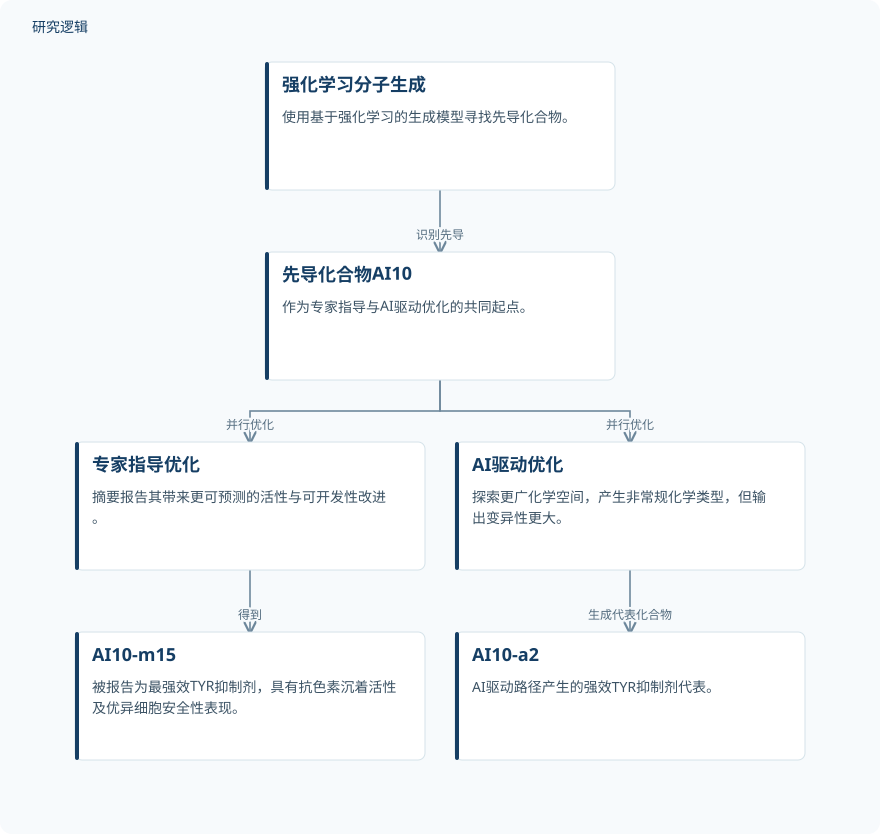

摘要解读
从分子从头生成到双轨先导优化：人工智能与化学家协同发现酪氨酸酶抑制剂
Discovery of TYR inhibitors from de novo molecular generation to dual-track lead optimization: “Competition” between AI and chemists
解读更新 2026-10-17 09:36 · 依据公开摘要整理，未核验全文细节
寻找用于色素沉着障碍的酪氨酸酶（TYR）抑制剂，AI生成分子之后，还需要怎样的优化？这项研究从同一个AI生成先导化合物出发，比较专家指导与AI驱动的优化路径，为理解探索多样性与可预测改进之间的关系提供了案例。
文章目录
从生成分子到优化先导：AI与专家如何分工
研究面向色素沉着障碍的TYR抑制剂发现，将AI从头分子生成与后续先导化合物优化纳入统一框架。这里的重点不只是能否生成活性分子，还包括获得先导之后，专家经验与AI探索分别能带来什么。
以AI10为起点，展开并行优化
研究首先使用基于强化学习的生成模型，识别出先导化合物AI10。随后，优化分为专家指导和AI驱动两条并行路径，再对其表现进行系统比较。摘要明确了这一流程，但没有展开模型训练、奖励设计或专家选择结构修改方案的具体规则。
依据摘要整理的TYR抑制剂发现流程


概括强化学习生成先导及两条并行优化路径，不表示论文原图，也不补充未报告的实验配置。
下载 SVG图示关系说明
实线表示相邻阶段的信息流，虚线表示跨阶段联系或反馈。
强化学习分子生成 → 先导化合物AI10：识别先导；先导化合物AI10 → 专家指导优化：并行优化；先导化合物AI10 → AI驱动优化：并行优化；专家指导优化 → AI10-m15：得到；AI驱动优化 → AI10-a2：生成代表化合物
专家路径强调可预测改进，AI路径拓宽化学探索
专家指导路径得到AI10-m15，摘要将其描述为最强效的TYR抑制剂，并报告了显著的抗色素沉着活性和优异的细胞安全性表现。这些表述对应摘要报告的研究结果，不能直接延伸为人体使用安全或临床疗效结论。
AI驱动路径则探索了更广的化学空间，生成非常规化学类型，其中AI10-a2被报告为强效TYR抑制剂。摘要强调，AI能够发现非直觉的活性悬崖，但其输出也具有更大的变异性。
系统比较呈现出的不是简单的胜负关系：AI模型的优势在于探索多样性，专家指导优化则带来更可预测的活性与可开发性改进。作者据此强调两者结合的价值；摘要未提供发现效率提升的量化幅度。
活性优势与安全性结论仍需核对验证边界
仅凭摘要，无法判断化合物数量、实验重复、活性测定条件及统计不确定性，也无法确认“最强效”所覆盖的具体比较对象。抗色素沉着活性和细胞安全性采用何种模型、浓度与评价指标，摘要同样没有交代；这不等于论文未开展相关实验。
两条路径的资源投入、筛选预算和比较标准也未在摘要中说明。因此，目前适合把结果理解为该研究报告的互补特点，而非AI或专家在不同任务中普遍占优的证据。
阅读启发：把探索广度与优化稳定性分开评价
阅读启发：对于关注生成式设计的读者，这项工作的可借鉴之处是区分“探索了哪些候选”与“能否稳定改进目标”。进一步阅读时，可重点核对作者如何界定化学空间多样性、输出变异性与可开发性，以及并行比较是否具有一致的评价基础；这些问题尚不能由摘要回答。
以上为本站阅读启发与建议，不是论文已验证的结论。